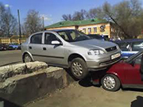
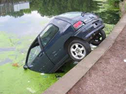
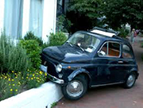

Светлин Наков
Главен шофьор, мастър механик и вдъхновител за много автосервизи в страната и чужбина. Противоречиви са данните кога точно започва автомобилната кариера на г-н Наков, а и историята мълчи по въпроса. Нашият сайт обаче, успя да се сдобие със снимка на неговият първи автомобил.
Както се вижда, още от първите мигове зад волана, сигурността е била основна грижа за младият и неопитен все още шофьор. През следващите години Наков подобрява значително своите умения във шофирането, за което свидетерстват следните кадри:
  Въпреки трудностите в началото, кариерата на г-н Наков търпи възход. Само за няколко години той преминава през почти всички големи таксиметрови компании, за да се озове накрая при нас – СофтАуто. По мнение на нашите кленти, той е истински професионалист и незаменим събеседник на тема „обогатяване на горивната смес при УАЗ 3151“ . Не се колебайте да го наемете - пристигането навреме и мириса на разтопен каучук са гарантирани!